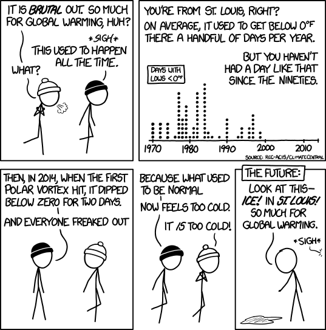
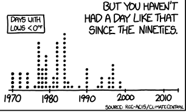
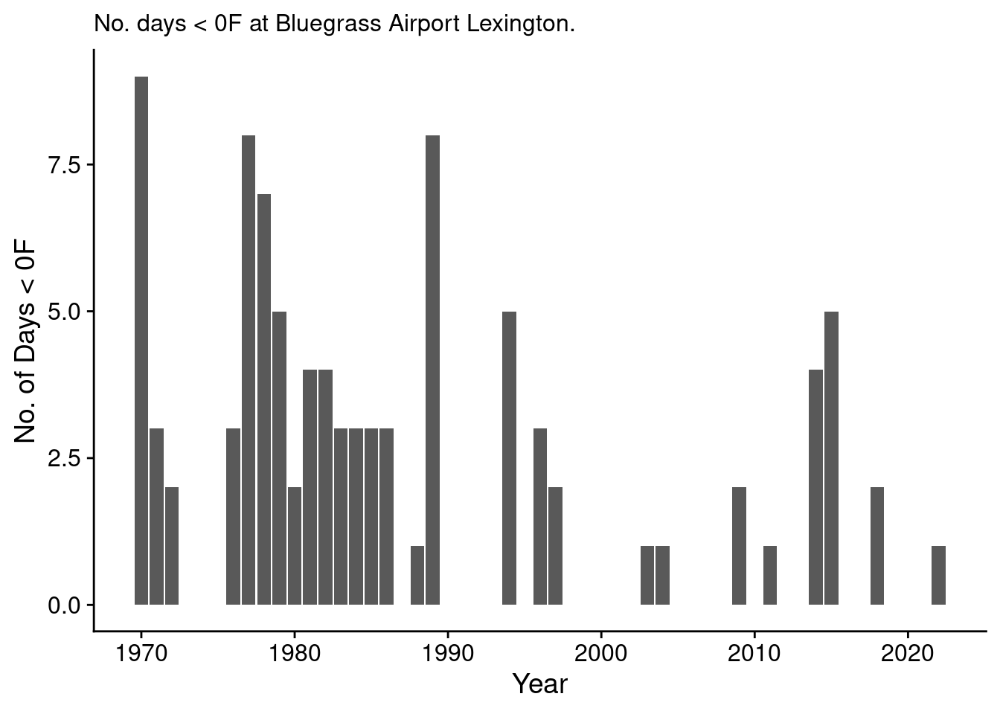
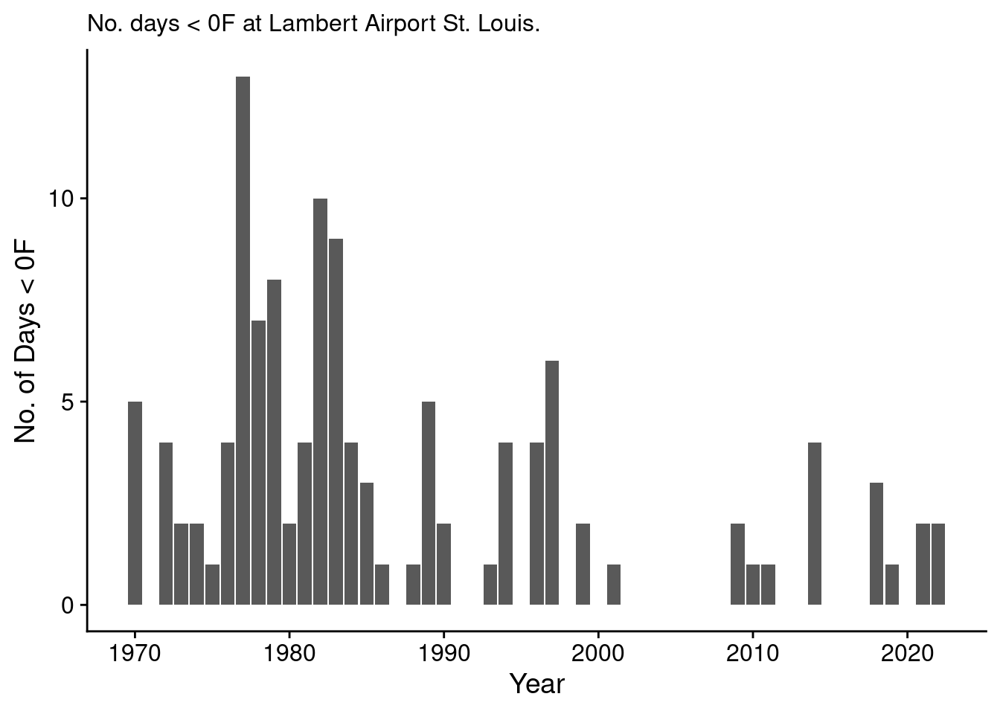

![]()

XKCD?
In the past few years I’ve seen a lot of spiral graphs of temperature anomolies, temperature records knit into scarves, among others. But, hats off to Randall Munroe’s XKCD, I think this is one of the more useful graphics about local temperature records (full comic in Figure 1, and inset blown up in Figure 2) (Munroe 2022). I’m not sure why I’m just seeing this comic, as it is listed as comic 1321, and XKCD is up to 2717 as of 2022-12-27, but better late than never!

This very, very quickly shows people that the lows since 2000 have not gone below 0F until very recently, and the frequency of days below 0F in a given year were quickly decreasing. I think it’s a very effective graphic (and comic).
But what if we want to generate our own for another location?
Data
In the comic, Randall lists the rcc-acis as the source of the data. I managed to find https://www.rcc-acis.org/ as the likely source. I looked for an API, and found this page (“RCC-ACIS API” 2022).
The description of the various API end points seems reasonable enough, except we really want to know where and what we are looking for.
I live in Lexington, KY, USA, so I’m going to use that for the following code.
First, we need to find the census code for the county we want to search for weather stations in.
We can find the county codes from the census.gov website (“Census.gov County Codes” 2022). In my case, Fayette Co KY is 21,067, which we will input into the API as 21067 (without the comma).
Then I can go to the rcc-acis API at http://data.rcc-acis.org/StnMeta?county=21067 and see the list of stations.
{"meta":[
{"uid": 8251, "ll": [-84.4994, 38.1336], "sids": ["154748 2", "LSFK2 7"], "state": "KY", "elev": 930.0, "name": "LEXINGTON SPINDLETOP FARM"},
{"uid": 8252, "ll": [-84.5, 38.03333], "sids": ["154741 2"], "state": "KY", "elev": 1030.0, "name": "LEXINGTON SOLAR RAD"},
{"uid": 8253, "ll": [-84.61138, 38.03391], "sids": ["93820 1", "154746 2", "LEX 3", "72422 4", "KLEX 5", "USW00093820 6", "LEX 7"], "state": "KY", "elev": 962.0, "name": "LEXINGTON BLUEGRASS AP"},
{"uid": 8387, "ll": [-84.53333, 38.1], "sids": ["153408 2", "USC00153408 6"], "state": "KY", "elev": 947.0, "name": "GREENDALE"},
{"uid": 31507, "ll": [-84.52694, 38.01556], "sids": ["154736 2", "LEXK2 7"], "state": "KY", "elev": 987.0, "name": "LEXINGTON 3 SE"},
{"uid": 40338, "ll": [-84.36667, 38.0], "sids": ["151548 2"], "state": "KY", "name": "CHILESBURGH"},
{"uid": 53409, "ll": [-84.5097, 37.98434], "sids": ["US1KYFY0001 6", "KYFY0001 10"], "state": "KY", "elev": 951.0, "name": "LEXINGTON 4.9 SW"},
{"uid": 53410, "ll": [-84.48511, 37.96729], "sids": ["US1KYFY0002 6", "KYFY0002 10"], "state": "KY", "elev": 981.0, "name": "LEXINGTON-FAYETTE 6.3 S"},
{"uid": 53411, "ll": [-84.51874, 38.01625], "sids": ["US1KYFY0003 6", "KYFY0003 10"], "state": "KY", "elev": 1004.0, "name": "LEXINGTON 3.7 WSW"},
{"uid": 53412, "ll": [-84.49503, 38.02486], "sids": ["US1KYFY0009 6", "KYFY0009 10"], "state": "KY", "elev": 1010.0, "name": "LEXINGTON 1.7 SSE"},
{"uid": 53413, "ll": [-84.4816, 37.9876], "sids": ["US1KYFY0012 6", "KYFY0012 10"], "state": "KY", "elev": 929.0, "name": "LEXINGTON-FAYETTE 4.0 SSW"},
{"uid": 53414, "ll": [-84.51935, 38.01643], "sids": ["US1KYFY0014 6", "KYFY0014 10"], "state": "KY", "elev": 999.0, "name": "LEXINGTON 1.7 SW"},
{"uid": 69236, "ll": [-84.53672, 38.05231], "sids": ["US1KYFY0019 6", "KYFY0019 10"], "state": "KY", "elev": 957.0, "name": "LEXINGTON 4.3 W"},
{"uid": 82402, "ll": [-84.45337, 37.99841], "sids": ["US1KYFY0023 6", "KYFY0023 10"], "state": "KY", "elev": 1045.0, "name": "LEXINGTON 4.2 SSE"},
{"uid": 86252, "ll": [-84.41615, 38.04699], "sids": ["US1KYFY0027 6", "KYFY0027 10"], "state": "KY", "elev": 947.0, "name": "LEXINGTON 4.7 E"},
{"uid": 86818, "ll": [-84.51712, 37.97325], "sids": ["US1KYFY0029 6", "KYFY0029 10"], "state": "KY", "elev": 974.0, "name": "LEXINGTON 5.7 SSW"},
{"uid": 89211, "ll": [-84.55495, 37.97623], "sids": ["US1KYFY0032 6", "KYFY0032 10"], "state": "KY", "elev": 975.0, "name": "LEXINGTON 6.9 SW"},
{"uid": 93426, "ll": [-84.52242, 37.98129], "sids": ["US1KYFY0036 6", "KYFY0036 10"], "state": "KY", "elev": 993.0, "name": "LEXINGTON 4.8 S"},
{"uid": 101642, "ll": [-84.44324, 38.05104], "sids": ["US1KYFY0040 6", "KYFY0040 10"], "state": "KY", "elev": 953.0, "name": "LEXINGTON 3.3 E"},
{"uid": 102039, "ll": [-84.54735, 37.9821], "sids": ["US1KYFY0041 6", "KYFY0041 10"], "state": "KY", "elev": 996.0, "name": "LEXINGTON 4.5 SSW"}]}The easiest, and likely most consistent location for me to use is the Bluegrass Airport, which has UID 8253.
Let’s pull the json data for daily maximum and minimum temperatures since 1970 to yesterday (2022-12-25) using this json query:
http://data.rcc-acis.org/StnData?uid=8253&sdate=1970-01-01&edate=2022-12-25&elems=1,2We can pull all that data into R directly using:
temp_data = jsonlite::fromJSON("http://data.rcc-acis.org/StnData?uid=8253&sdate=1970-01-01&edate=2022-12-25&elems=1,2")I’m actually going to cache that data in a local file, so I’m not making 20 pulls while I’m writing this blog post.
temp_data = jsonlite::fromJSON("bluegrass_dailytemps.json")
str(temp_data)List of 2
$ meta:List of 6
..$ uid : int 8253
..$ ll : num [1:2] -84.6 38
..$ sids : chr [1:7] "93820 1" "154746 2" "LEX 3" "72422 4" ...
..$ state: chr "KY"
..$ elev : num 962
..$ name : chr "LEXINGTON BLUEGRASS AP"
$ data: chr [1:19352, 1:3] "1970-01-01" "1970-01-02" "1970-01-03" "1970-01-04" ...We’ve got some metadata about the station we pulled from, and then a matrix of dates and daily maximum and minimum recorded temperatures. We’ll turn that into a tibble and convert the dates to something more useful. I’m going to aggregate by year to make this easy.
library(lubridate)
library(ggplot2)
theme_set(cowplot::theme_cowplot())bluegrass_df = tibble::as_tibble(temp_data$data)
names(bluegrass_df) = c("date", "max", "min")
bluegrass_df = bluegrass_df |>
dplyr::mutate(date2 = lubridate::as_date(date),
year = lubridate::year(date2),
month = lubridate::month(date2),
ym = paste0(year, "-", month))
bluegrass_df# A tibble: 19,352 × 7
date max min date2 year month ym
<chr> <chr> <chr> <date> <dbl> <dbl> <chr>
1 1970-01-01 33 23 1970-01-01 1970 1 1970-1
2 1970-01-02 34 23 1970-01-02 1970 1 1970-1
3 1970-01-03 26 15 1970-01-03 1970 1 1970-1
4 1970-01-04 35 14 1970-01-04 1970 1 1970-1
5 1970-01-05 44 23 1970-01-05 1970 1 1970-1
6 1970-01-06 34 11 1970-01-06 1970 1 1970-1
7 1970-01-07 11 -6 1970-01-07 1970 1 1970-1
8 1970-01-08 3 -5 1970-01-08 1970 1 1970-1
9 1970-01-09 8 -3 1970-01-09 1970 1 1970-1
10 1970-01-10 18 -6 1970-01-10 1970 1 1970-1
# … with 19,342 more rowsLet’s count how many days a year a minimum was below a set temperature. Similar to XKCD, I’ll try a cutoff of 0F (see Figure 3).
cutoff = 0
bluegrass_0 = bluegrass_df |>
dplyr::mutate(below_cutoff = min < cutoff) |>
dplyr::group_by(year) |>
dplyr::summarize(nday = sum(below_cutoff)) |>
dplyr::ungroup() #|>
#dplyr::mutate(ym = lubridate::ym(ym))
bluegrass_0 |>
ggplot(aes(x = year, y = nday)) +
geom_col() +
labs(subtitle = "No. days < 0F at Bluegrass Airport Lexington.",
x = "Year", y = "No. of Days < 0F")
Nice. Definitely fewer days at less than 0F in more recent times than previously.
Double Check Using Lambert Airport in St. Louis
But how do I know it’s probably right? We can double check if I get a very similar plot to the XKCD one when using the data from St. Louis’ Lambert Airport, as shown in Figure 4. I went through the same procedure as above to find the county code for St. Louis, and then the UID for Lambert Airport, and saved the JSON.
temp_lambert = jsonlite::fromJSON("lambert_stlous_dailytemps.json")
lambert_df = tibble::as_tibble(temp_lambert$data)
names(lambert_df) = c("date", "max", "min")
lambert_df = lambert_df |>
dplyr::mutate(date2 = lubridate::as_date(date),
year = lubridate::year(date2),
month = lubridate::month(date2),
ym = paste0(year, "-", month))
lambert_0 = lambert_df |>
dplyr::mutate(below_cutoff = min < cutoff) |>
dplyr::group_by(year) |>
dplyr::summarize(nday = sum(below_cutoff)) |>
dplyr::ungroup()
lambert_0 |>
ggplot(aes(x = year, y = nday)) +
geom_col() +
labs(subtitle = "No. days < 0F at Lambert Airport St. Louis.",
x = "Year", y = "No. of Days < 0F")
So Figure 4 is similar to the one from XKCD, but I’d really like to see the data file they used and which station. I also think they probably used only the fall and winter months for a given year, like December to February, and that was the count for that particular year, excluding the next December. Regardless, the frequency of days where the minimum was below 0F has dropped significantly since the 80’s and 90’s, whether here in Lexington or St. Louis.
References
“Census.gov County Codes.” 2022. https://www.census.gov/library/reference/code-lists/ansi.html#county; Web.
Munroe, Randall. 2022. “Cold.” https://xkcd.com/1321/; Web.
“RCC-ACIS API.” 2022. https://www.rcc-acis.org/docs_webservices.html; Web.
Reuse
Citation
BibTeX citation:
@online{mflight2022,
author = {Robert M Flight},
title = {Climate {Data} to {Analyze} {Days} by {Low} {Temperatures}},
date = {2022-12-27},
url = {https://rmflight.github.io/posts/2022-12-27-climate-data-to-analyze-days-by-low-temperatures},
langid = {en}
}
For attribution, please cite this work as:
Robert M Flight. 2022. “Climate Data to Analyze Days by Low
Temperatures.” December 27, 2022. https://rmflight.github.io/posts/2022-12-27-climate-data-to-analyze-days-by-low-temperatures.